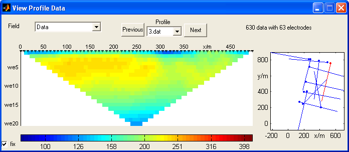
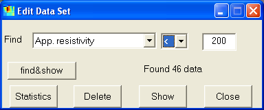

DC3DInvRes - Model Menu
Visit Data
Often the data are collected in form of 2d profiles or the profiles can be extracted from the 3d data file.
Then it is useful to process the data in form of pseudosections.

In the GUI the user can browse through the profiles by Previous/Next and the popup menu.
On the right hand side the location of the profiles are shown, the point denotes the first electrode.
The current profile is marked red.
Also, the model response, error or misfit can be viewed this way.
By the checkbox "fix" the colortable is forced to be identical for all profiles.
Edit Data
The Edit Data GUI can be used for prepocessing data. The data can be selected
according the relations >,< and = to a defined quantity of the following
fields:
- apparent resistivity
- error estimate
- electrode positions in x or y
- configuration factor k
- IP data (if present)
- current I (if present)
- voltage U (if present)
- data misfit
|

|
The button "find&show" shows the found data with red, the others
are blue.
The "Statistics" button provides a histogram of the selected field.
By clicking on "Delete" the selected (red) data points are deleted
from the data set.
"Show" displays the selected field, and "Close" exits the
GUI.
Show Electrodes
All used electrodes are plotted as a plan view. It is useful to check the positioning
particularly for non-grid profile data.
Delete Dead Electrodes
Sometimes it happens that electrodes exist in memory, which are not used anymore, e.g. after
data deletion. By this option the can be removed saving forward calculation time.
Forward Calculation
Sometimes (e.g. when interactively modelling) it is useful to call forward calculation
manually. The resulting forward response is displayed.
Noisify response
When creating synthetic data, it is realistic to add random errors to the data
(using standard deviations).
Set response as data
This options sets the data to the values of the forward response.
Write Data
The data are saved in the above described format (including errors).
Hotkey for Write data: Shift+W
Export Res2DInv Format
The data are exported in RES3DINV format
using the arbitrary electrode position feature (type=11).
Save PRO-File
The data are saved in form of 2D files and a PRO-file containing starting and
ending points.